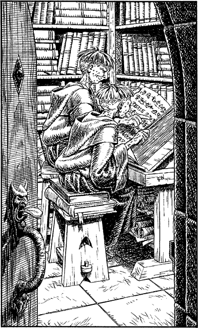

57
The corridor makes a gradual descent towards a single wooden door shod with heavy iron fittings. You press the handle carefully and, to your surprise, the door opens inwards without a sound. You enter and push the door closed before beginning your exploration of this archive.
The library contains thousands of books and time-yellowed parchments, stacked in uneven rows upon shelves that line every wall. The air is heavy with their odour and your senses prickle with the sensation that you are in the presence of works of great evil. Silently you pass from one chamber to the next until you spy two druids seated at a table in an adjoining room. They are studying a large tome which is bound in a pale-coloured leather. A wave of nausea makes you swallow hard the instant you realize that the book is covered with human skin. The two druids, who appear to be little older than a dozen years apiece, are chattering to each other excitedly. You move closer to the room and eavesdrop on their conversation.

After a few minutes you learn that their names are Noraa and Monad. They are novices who were brought into the sect by Cenerese agents after having been orphaned in their native land of Lourden. They seem devoted to studying the lore of their evil brotherhood, and as they read they ruminate at length about a great ‘day of retribution’ that the Cenerese will enjoy before the year ends.
At length they finish their studies and rise from the table. As Monad restores the book to its shelf, Noraa says:
‘Hurry up. We’ll be late for Kadrian’s sermon.’
Monad nods apologetically, and hurries to join his brother as he leaves the library by another door. As the latch clicks shut, you emerge from your listening place and enter the room.
If you wish to follow the two young druids, turn to 138.
If you choose to search this room, turn to 48.